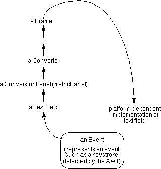

GUI: Events |
Definition:
When the user acts on a Component -- clicking it or pressing the Return key, for example -- an Event object is created.
Processing
The AWT event-handling system passes the Event up the Component hierarchy, giving each Component a chance to react to the event before the platform-dependent code that implements the Component fully processes it:

How Component's event handler can react to an event:By ignoring the event and allowing it to be passed up the Component hierarchy. By modifying the Event instance before it goes further up the hierarchy. By reacting in some other way to the event. By intercepting the event, stopping it from being processed further. Note:
The AWT doesn't see every event that occurs. The AWT can see only those events that the platform-dependent code lets it see.